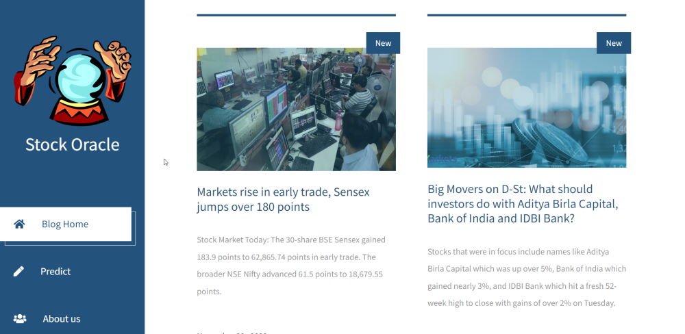
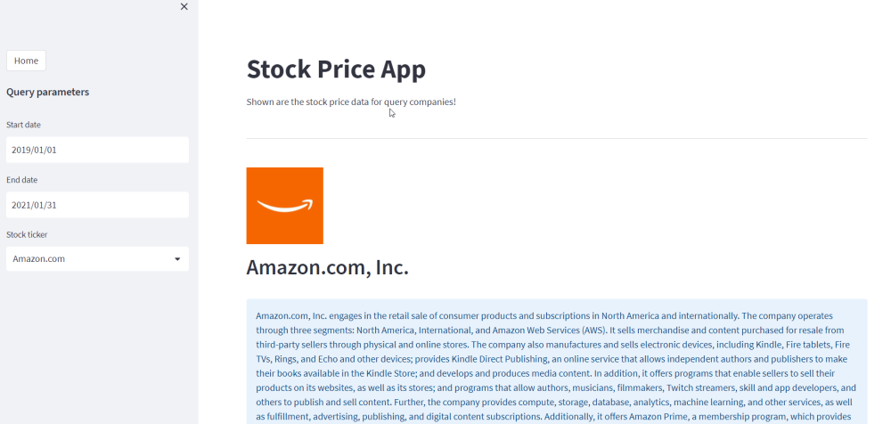
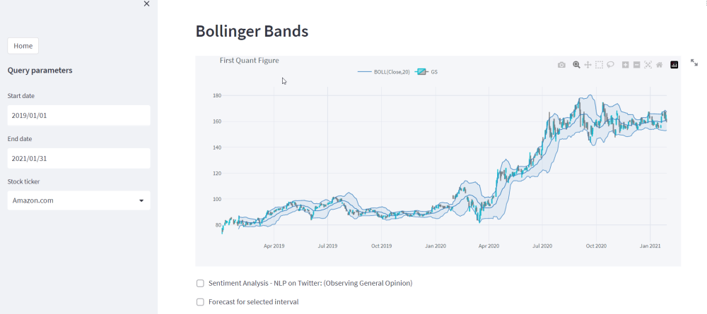
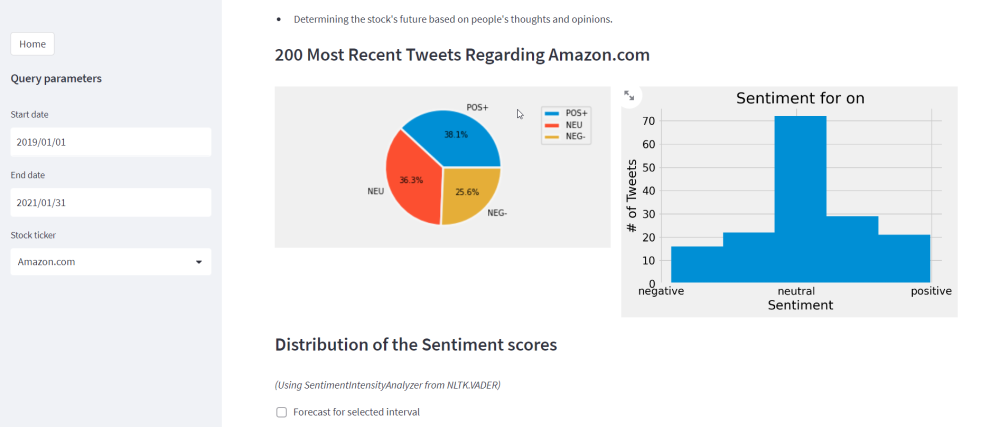

Readme
StockOracle
This is an website for stock market news and and live stock status and prediction also sentimetal analysis.
Thew website is divided in two parts first one being the news website made using HTML/CSS , Javascript and news-api

The next part is the prediction page which is made complete in python using streamlit library .
This portion uses Yahoofinance to fetch stock details and fbprophet to analyse and predictict further growth.


Also showcase public sentiments towards company using NLTK VADER for sentimental analysis and twint api for twitter feeds.

Don't forget to read both readme files from py folder and stock oracle folder for complete installation steps.